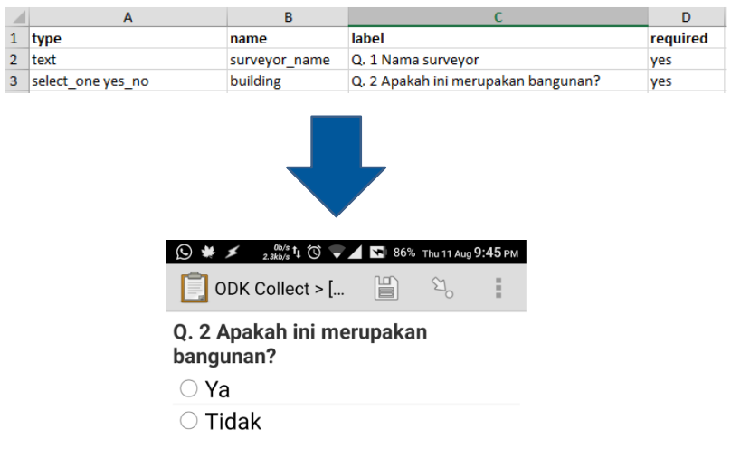
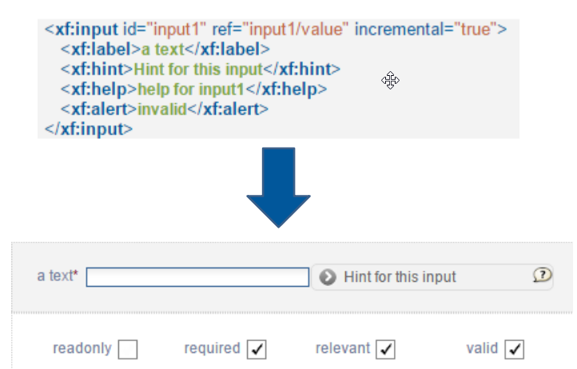
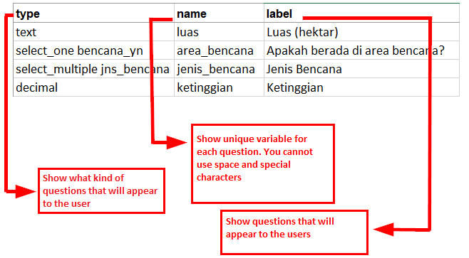
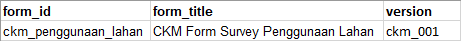
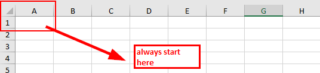
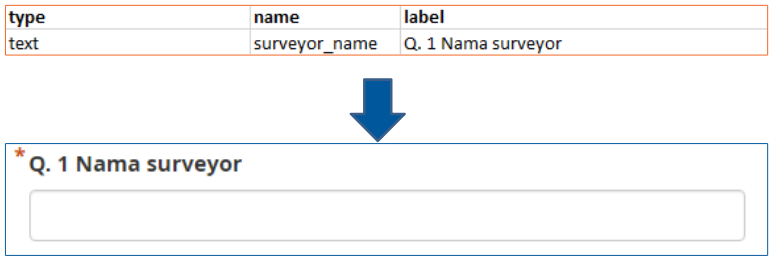
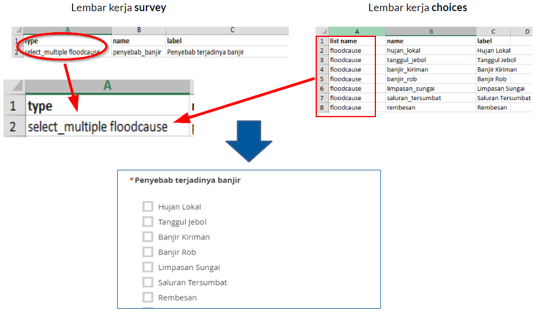
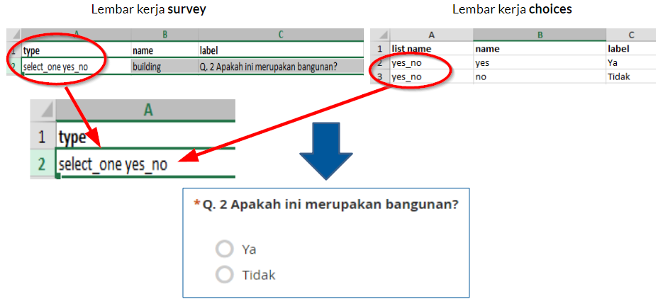
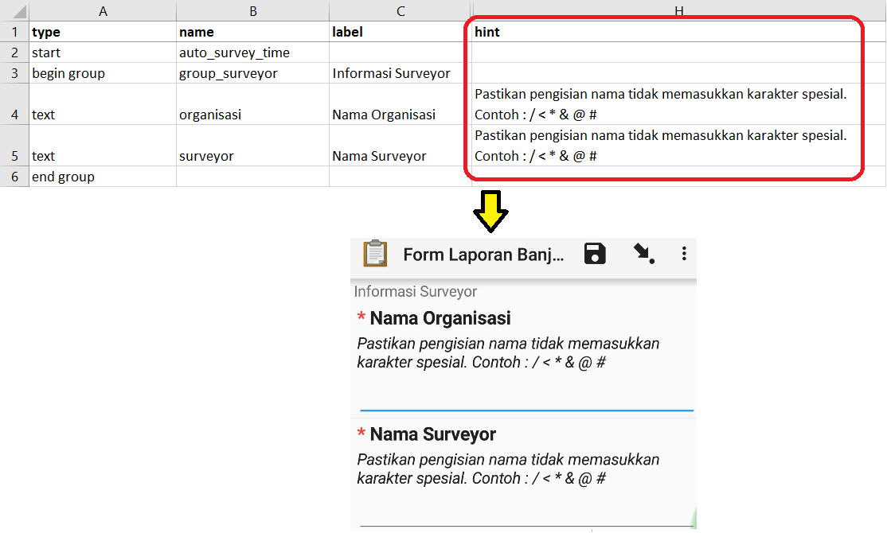

2.6 Créer un formulaire XLS POUR ODK Collect
Objectifs du cours
Dans les activités d’enquête sur le terrain, vous avez parfois besoin d’un formulaire d’enquête pour collecter les données. Imaginez que vous ayez besoin d’un formulaire d’enquête comportant des dizaines de questions pour chaque personne interrogée, vous trouverez certainement des difficultés à remplir les données et à les saisir sur un ordinateur portable. Dans ce document, vous apprendrez à créer un formulaire d’enquête au format numérique qui sera ensuite saisi sur votre téléphone portable. À la fin de ce cours, vous serez en mesure de :
- Expliquer le concept de XLSForm
- Opérer la création d’un XLSForm poour ODK Collect
Activités d’apprentissage
Comprendre le concept de XLSForm
XLSForm est un formulaire standard créé pour accélérer le processus de création de formulaires d’enquête dans Excel. La création de ce formulaire d’enquête se fait dans un format facile à lire et utilise un outil familier - Excel / Google Sheets. XLSForm produit des normes standard pour le partage et la coopération dans la création de formulaires d’enquête. XLSForm est très facile à utiliser mais peut aussi être très compliqué si vous êtes familier avec sa création.

XLSForm sera ensuite converti en XForm, un format standard ouvert, qui permet de créer un formulaire avec des fonctions très complexes, telles que des questions à plusieurs niveaux, dans un format qui a été reconnu à la fois par les outils de collecte de données ou sous la forme de sites sur Internet, ainsi que dans les appareils mobiles.

| Astuces: |
|---|
| La principale exigence pour la création des XLSForm est que le formulaire d’enquête final soit dans ce type de format Microsoft Excel (.xls ou .xls). Si vous créez des formulaires d’enquête à l’aide d’autres applications telles que Google Sheets ou Libre Office, vous devez vous assurer que le fichier final est enregistré au format .xls ou .xlsx. |
Création de XLSForm pour les applications ODK
Vous vous demandez peut-être comment créer un formulaire XLSForm efficace pour votre formulaire d’enquête. Nous allons maintenant apprendre à le créer en comprenant le format de base, les questions de base et les formats/types de questions supplémentaires.
Format Standard
Lors de la création de formulaires d’enquête, certaines conditions doivent être respectées pour que les formulaires d’enquête que nous créons puissent être transformés en format XForm. Voici quelques-unes des règles à respecter pour créer un formulaire d’enquête approprié sont :
- Avoir trois principaux tableaux (survey, choices & settings)
- Avoir trois colonnes dans chaque feuille de calcul
- Toutes les entrées doivent commencer à partir de première case
1. Trois feuilles de travail principales
La feuille de calcul que nous créons doit se composer de trois feuilles de calcul principales : la feuille de calcul nommée survey, choices et settings. Le nom de cette feuille de calcul doit correspondre et ne doit pas être erroné, car cela échouera lors du téléchargement de votre formulaire d’enquête.

| Astuces sur les noms: | |
|---|---|
| survey | Toutes les questions que nous posons doivent être inscrites sur cette feuille de travail. Toutes les questions que nous posons ne doivent pas être incluses dans la liste des réponses. Toutes les listes de réponses dont nous avons besoin renvoient à la feuille de travail suivante. |
| choices | Sur cette feuille de travail, nous incluons toutes nos listes de réponses pour chaque question qui nécessite des choix de réponses. |
| settings | Sur cette feuille de travail, nous ne pouvons saisir le nom de notre formulaire que si le nom de notre formulaire est différent du nom de notre fichier. Par exemple, si le nom de notre fichier est form_survei_air_bersih.xls alors dans cette feuille de calcul nous pouvons nommer notre formulaire avec le nom que nous voulons, par exemple « the Water Condition Form». |
2. Trois colonnes principales
Il y a au moins trois colonnes principales qui doivent être écrites dans chaque feuille de travail
-
Feuille de travail survey
Dans la feuille de calcul survey nous devons insérer trois colonnes intitulées : type, name, and label. La colonne avec le nom type indique le type de question qui apparaît ultérieurement, qu’il s’agisse d’une question à choix, d’une question à entrée libre ou d’une capture d’emplacement.
La colonne avec name indique la variable unique pour chaque liste de questions. Ces variables ne peuvent pas être identiques, n’utilisent pas d’espaces et ne sont que des chiffres, des lettres ou des traits de soulignement.
La colonne avec label indique la question qui apparaît sur l’appareil mobile de l’utilisateur. Il n’y a pas de format standard pour cette colonne, vous êtes libre d’utiliser des lettres, des chiffres et des caractères spéciaux dans cette colonne.

-
Choix de la feuille de travail
Dans la feuille de calcul des choix, nous devons insérer trois colonnes, à savoir name, list_name, & label. Dans list_name vous créez un groupe qui contient un ensemble de choix de réponses. Par exemple, un ensemble de choix de réponses qui apparaîtront sous les questions à choix multiples.
La colonne name - Toutes les variables doivent être uniques et différentes des autres, que ce soit sur la feuille survey ou choices; n’utilisez pas d’espaces mais ils sont remplacés par deux points ; et n’utilisez pas de caractères spéciaux tels que des points d’interrogation, des points d’exclamation, etc.
La colonne label - Cette colonne contient le texte de la réponse qui apparaît sur le téléphone portable de l’utilisateur. Vous pouvez utiliser librement des espaces, des caractères spéciaux ou des lettres dans cette colonne.

| Astuces: |
|---|
| Pour nommer une variable dans list_name la dénomination doit être conforme à celle fournie dans la feuille de calcul survey. Par exemple, sur la feuille de calcul d’une enquête, nous entrons un type de choix multiple avec le nom select_one jns_bencana. Sur la feuille de calcul des choix nous devons donc remplir list_name avec le nom jns_bencana. |
-
Worksheet settings
Worksheet settings est utilisée lorsque vous souhaitez effectuer des réglages supplémentaires tels que donner le nom de votre formulaire d’enquête, donner au formulaire un identifiant spécifique et la version de votre formulaire d’enquête. Pour utiliser cette fonctionnalité, vous devez fournir ces trois noms de colonnes : form_title, form_id et version.
La colonne form_title, vous pouvez donner un nom libre à votre formulaire. Ce nom apparaîtra plus tard sur le téléphone portable de l’utilisateur.
La colonne form_id, vous pouvez indiquer l’identifiant de votre formulaire. Les conditions pour nommer cette colonne sont que vous ne pouvez pas avoir le même identifiant que les autres formulaires, n’utilisez pas d’espaces, et n’utilisez pas de caractères spéciaux.
La colonne version, vous pouvez fournir une version de votre formulaire. L’ajout d’une colonne de version n’est pas obligatoire. Si vous ajoutez / modifiez fréquemment vos formulaires d’enquête, le fait de fournir une version en colonne vous permettra de télécharger plus facilement les formulaires sur le serveur.

3. Toutes les entrées doivent commencer à partir de la première case
L’une des exigences les plus importantes est que lorsque nous créons un formulaire d’enquête, tout doit commencer dans le champ /quadrant A-1.

Tous les formulaires d’entrée doivent commencer dans ces quadrants/champs car le système convertira le fichier de feuille de calcul en XForm, donc si vous ne commencez pas à cette position, une erreur se produira dans le système.
En outre, l’autre exigence principale est que vous ne pouvez pas utiliser de formats de tableau tels que la fusion, le centrage, le masquage des lignes et des colonnes, l’habillage du texte, etc. Tout doit être dans un format standard. Les paramètres que nous pouvons utiliser sont l’ajout de lettres en gras, l’attribution de couleurs aux colonnes ou aux lignes, et la modification de la forme et de la taille des lettres.
Format de questions de base pour XLSForm
Dans le formulaire d’enquête papier, nous trouvons généralement plusieurs questions telles que des réponses courtes, des réponses longues, la saisie de la date de naissance et des choix multiples. Plus vous maîtrisez la création de XLSForm, plus vous vous demandez s’il existe d’autres types de questions susceptibles de faciliter l’utilisation de vos formulaires d’enquête et de vous permettre d’extraire des données selon vos souhaits. Pour voir tous les types de questions qui peuvent être utilisés dans la création de XLSForm, vous pouvez vous rendre sur le site http://xlsform.org.
1. text
Ce type de question génère une question à réponse libre. Les utilisateurs peuvent saisir librement des chiffres, des lettres et des caractères spéciaux si nous utilisons ce type de question.

2. integer/decimal
Ce type de question produit un format de question dont les réponses sont des nombres entiers (spécifiquement pour les nombres entiers) ou des nombres décimaux (spécifiquement pour les nombres décimaux). Les utilisateurs ne peuvent saisir que des nombres avec ce type de question. Une combinaison de nombres et de lettres ne peut pas être saisie si l’on utilise ce type de question.

3. select_one
Ce type de question donne à l’utilisateur un choix de réponses où l’utilisateur ne peut choisir qu’une seule réponse. Pour créer ce type de question, vous devez utiliser un format tel que select_one [options]. ou [option] est une variable de groupe qui sera incluse dans list_name à l’intérieur de la feuille de calcul choices.

4. select_multiple
Ce type de question est le même que le précédent. Les réponses présentées à l’utilisateur comportent plusieurs choix et l’utilisateur peut choisir plus d’une réponse. Les règles de création de ce type de question sont les mêmes que celles qui s’appliquent aux questions suivantes select_one. Vous devez utiliser un format tel que select_multiple [option], ou [option] est une variable de groupe qui sera incluse dans les choix sous list_name.

5. geopoint
Ce type de question demande à l’utilisateur d’enregistrer les coordonnées de sa position et produit des données sous forme de latitude et de longitude.

6. note
Ce type est utilisé pour ajouter une page de note ou de notification. Les utilisateurs se verront présenter une page unique contenant uniquement l’apparence du texte, sans avoir à remplir d’informations. En ce qui concerne le format d’écriture, il suit toujours les conventions d’écriture du label, où nous sommes libres de donner n’importe quel format d’écriture.

7. Image, video, or audio
Ce type de question demande à l’utilisateur de prendre une photo, un son ou une vidéo.

8. hint
En utilisant cette fonction, nous pouvons fournir des informations supplémentaires ou des instructions sur la manière de répondre à une question que nous nous posons. Pour créer cette fonctionnalité, nous devons ajouter une nouvelle colonne dans la feuille de calcul de survey, appelée hint. En ajoutant cette colonne, pour chaque type de question que nous posons, nous pouvons l’ajouter avec les informations, telles que les instructions pour remplir le formulaire, dans la colonne « hint ».

9. required
Grâce à cette fonction, les utilisateurs ne pourront pas répondre à d’autres questions s’ils n’ont pas répondu à la première question. Les types de questions qui utilisent cette fonction sont également marqués d’un astérisque rouge lorsqu’elles sont affichées sur votre téléphone. Pour utiliser cette fonctionnalité, il vous suffit de créer une nouvelle colonne appelée required sur la feuille de calcul de l’enquête. Pour que les questions deviennent obligatoires, vous devez ajouter la valeur yes ou 1 dans cette colonne “obligatoire”.

[Quiz] Testez vos connaissances
-
Quel type de format de fichier devez-vous créer pour créer un formulaire d’enquête pour ODK Collect ?
a. .pdf
b. .json ou .geojson
c. .xls ou .xlsx
d. .img ou .png
-
Quel est le nom standard de la feuille de calcul principale que vous devez mettre dans votre XLSForm ?
a. surveys, options, settings
b. survey, choices, settings
c. survey, choices, preferences
d. questions, choices, settings
-
Quel est le format de la question si vous voulez créer une question qui recueille des données GPS ?
a. Geopoint
b. Polygon
c. Decimal
d. Location
-
Si vous souhaitez collecter l’âge du répondant, quel type de format de question devez-vous utiliser dans votre formulaire xls ?
a. Text
b. Decimal
c. Note
d. Integer
-
Vous aurez cinq questions auxquelles le répondant devra répondre et il ne pourra pas sauter la question, quel type de format devez-vous mettre dans votre formulaire xls ?
a. Hint
b. Note
c. Required
d. Text
Answer: 1. C | 2. B | 3. A | 4. D | 5. C
Liste de contrôle des activités
Félicitations ! Vous avez appris avec succès à créer un formulaire d’enquête pour ODK Collect. À la fin de cette section, vous serez en mesure de :
- Comprendre ce qu’est XLSForm
- Format standard dans XLSForm
- Le type de question de base
Ressources complémentaires
- http://xlsform.org/
- https://docs.getodk.org/form-design-intro/
- Exemple de formulaire XLSForm pour le gestionnaire de tâches de cartographie de terrain (FMTM): Copy this! [TEMPLATE] buildings.xls